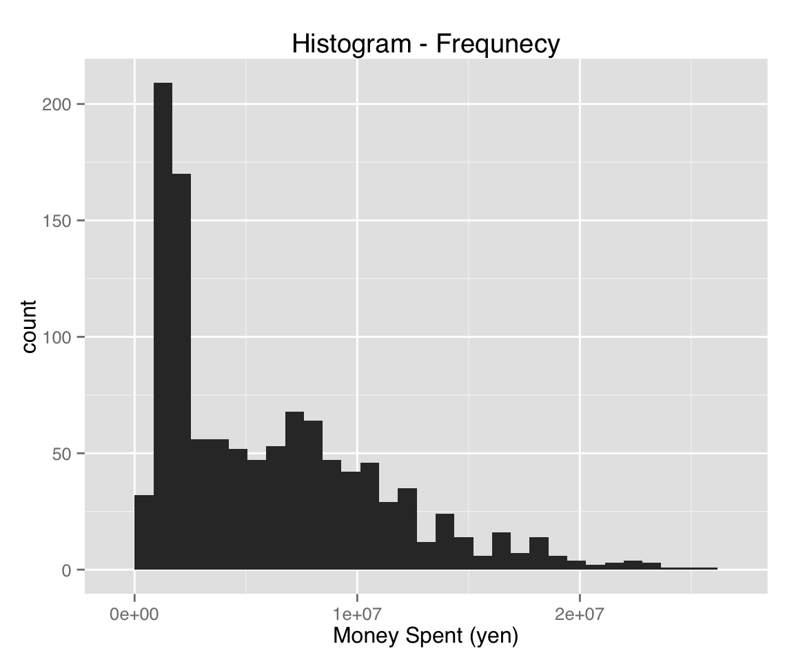

説明のために『Stataによる計量政治学』（浅野正彦, 矢内勇生. 2013）で使用されているデータ（hr96-09.dta） を使う。
このデータはStataのデータファイル（拡張子が.dta）であるが、foreign パッケージのread.dta() を利用して、Rで読み込むことができる。 このデータを作業ディレクトリ内のdataフォルダに保存したとすると、以下のコマンドでデータを読み込むことができる。
library("foreign")
HR <- read.dta("data/hr96-09.dta")
head(HR)## year ku kun party name age status nocand wl rank
## 1 1996 aichi 1 NFP KAWAMURA, TAKASHI 47 incumbent 7 win 1
## 2 1996 aichi 1 LDP IMAEDA, NORIO 72 moto 7 lose 2
## 3 1996 aichi 1 DPJ SATO, TAISUKE 53 incumbent 7 lose 3
## 4 1996 aichi 1 JCP IWANAKA, MIHOKO 43 challenger 7 lose 4
## 5 1996 aichi 1 bunka ITO, MASAKO 51 challenger 7 lose 5
## 6 1996 aichi 1 NP YAMADA, HIROSHIB 51 challenger 7 lose 6
## previous vote voteshare eligible turnout exp
## 1 2 66876 40.0 346774 49.22 9828097
## 2 3 42969 25.7 346774 49.22 9311555
## 3 2 33503 20.1 346774 49.22 9231284
## 4 0 22209 13.3 346774 49.22 2177203
## 5 0 616 0.4 346774 49.22 NA
## 6 0 566 0.3 346774 49.22 NAtail(HR)## year ku kun party name age status nocand
## 5609 2009 yamanashi 2 msz NAGASAKI, KOTARO 41 incumbent 4
## 5610 2009 yamanashi 2 LDP HORIUCHI, MITSUO 79 incumbent 4
## 5611 2009 yamanashi 2 H MIYAMATSU, HIROYUKI 69 challenger 4
## 5612 2009 yamanashi 3 DPJ GOTO, HITOSHI 52 incumbent 3
## 5613 2009 yamanashi 3 LDP ONO, JIRO 56 incumbent 3
## 5614 2009 yamanashi 3 H SAKURADA, DAISUKE 47 challenger 3
## wl rank previous vote voteshare eligible turnout exp
## 5609 lose 2 1 57213 32.1 234746 77.09 7916556
## 5610 lose 3 10 52773 29.6 234746 77.09 11611677
## 5611 lose 4 0 1214 0.7 234746 77.09 1326378
## 5612 win 1 3 112894 62.7 248102 74.70 6795969
## 5613 lose 2 1 63611 35.3 248102 74.70 12876644
## 5614 lose 3 0 3663 2.0 248102 74.70 1953819これで、データを読み込み、HRという名前のデータフレームを作ることができた。
このデータセットには、複数年の選挙結果が保存されている。 どの選挙のデータが含まれるか確認しよう。
with(HR, table(year))## year
## 1996 2000 2003 2005 2009
## 1261 1199 1026 989 1139このように、5回の衆院選のデータがある。 ここから dplyr パッケージの filter() で2009年のデータだけを取り出し、HR09というデータフレームを作ろう。
## 必要なら、まずdplyr をインストールする
# install.packages("dplyr", dependencies = TRUE, repos = "http://cran.ism.ac.jp")
library("dplyr")
HR09 <- filter(HR, year==2009)
with(HR09, table(year))## year
## 2009
## 1139以下の説明では、このHR09を使う
2009年の衆院選データ（HR09）のうち、候補者の立場（status) と選挙結果 (wl) の関係を表にしてみよう。
(tbl.st.wl <- with(HR09, table(status, wl)))## wl
## status lose win zombie
## challenger 559 81 43
## incumbent 168 174 52
## moto 15 45 2このようにRの中で扱う表はtable() で作ることができる。
しかし、この表をこのままの形で論文や学会報告等に使うことはできないので、表を他の形式に変換する必要がある。
Rで表を作るには、xtable パッケージのxtable() を使い、LaTeX形式で出力するのが便利である （LaTeX の説明は省く。研究者志望 [特に数量分析を使った研究をしたい者] にはLaTeXの使用を強く勧める）。
まず、xtableパッケージを読み込む。
## xtableをインストール済みでない場合は、次の行を実行
# install.packages("xtable", repos = "http://cran.ism.ac.jp")
library("xtable")次に、Rの表オブジェクト（行列や回帰分析の結果などにも使える：methods(xtable) で確認可）にxtable() を適用すれば、LaTeX形式の表が作れる。
先ほど作った表をLaTeXの表に変換してみよう。
xtbl.st.wl <- xtable(tbl.st.wl, align="lccc",
caption="候補者の立場と選挙結果の関係")
print(xtbl.st.wl)## % latex table generated in R 3.1.3 by xtable 1.7-4 package
## % Sat Jun 6 17:40:31 2015
## \begin{table}[ht]
## \centering
## \begin{tabular}{lccc}
## \hline
## & lose & win & zombie \\
## \hline
## challenger & 559 & 81 & 43 \\
## incumbent & 168 & 174 & 52 \\
## moto & 15 & 45 & 2 \\
## \hline
## \end{tabular}
## \caption{候補者の立場と選挙結果の関係}
## \end{table}これをTeXの文書にコピペしてもよいが、通常はオプションでファイル名を指定してファイルに書き出し、必要な変更（キャプションの位置など）を加えて利用する。
print(xtbl.st.wl, file = "tbl-st-wl.tex")また、type="html" として、HTML形式の表を出力することもできる。
print(xtbl.st.wl, type = "html")| lose | win | zombie | |
|---|---|---|---|
| challenger | 559 | 81 | 43 |
| incumbent | 168 | 174 | 52 |
| moto | 15 | 45 | 2 |
Rマークダウンで表を使うときは、この方法をとればよい。 ただし、チャンクオプションとしてresults='asis' を指定する。
LaTeXを使わない場合、表をCSVファイルとして出力し、出力されたCSVファイルをMS Excel やLibreOffice Calc等のスプレッドシートで編集するのが簡単である。 CSVファイルを出力するには、write.csv()を利用する。
write.csv(tbl.st.wl, file = "tbl-st-wl.csv")これで作業ディレクトリにtbl-st-wl.csv という名前のcsvファイルが出来るので、スプレッドシートで罫線を加えるなどの修正を行えばよい。
RからMS PowerPoint で使える表を作るR2PPT パッケージや、MS Word で使える表を作るR2wd パッケージがあるが、最近のR (R version 3.1.1) では使えない。 （おそらく）バージョン2 のRを使う必要があるので、説明は省略する。
論文や学会報告等のプレゼンテーションに使う図は、ggplot2 を使って作るのがよい。 ggplot2 を使うメリットは、何と言っても見栄えのよい図ができるということである。 見栄えより中身のほうが重要なのは言うまでもないが、中身が同じなら見栄えがよいほうがよい。 それに、図が「見易い」ということは、内容が「理解し易い」ということに繋がる。
ggplot2は、Hadley Wickham が作ったR用のパッケージである。 各コマンドの解説はggplot2のページ で読むことができる。 さらに詳細な解説は、Wickham. 2009. ggplot2: Elegant Graphics for Data Analysis (Springer) に書かれている（学内ネットワークからSpringerのサイト に接続してダウンロード可。ただし、古いバージョンでしか動かないコマンドがいくつか書かれているので注意）。 関連書籍として、Hrish V. Mittal. 2011. R Graphs Cookbook (Packt) やWinston Chang (石井弓美子 訳） 2013.『Rグラフィックスクックブック』（オライリー・ジャパン）などがある。
今日の目標は、ggplot2を使った基本的な作図法を身につけることである。 図を微調整する方法については、来週以降必要に応じて説明する。
ggplot2 をまだインストールしていない場合は以下のコマンドでインストールする。
install.packages("ggplot2", repos = "http://cran.ism.ac.jp", dependencies = TRUE)インストールが済んだら、パッケージを読み込む。
library("ggplot2")これでggplot2を使う準備は整った。
ggplot2で図を作る際に使う基本的な関数はggplot() である（qplot() を使う方が簡単な作図ができるが、[1] ggplot() と使い方が少し異なり、[2] 最終的にはggplot() を使うことになるという理由から、説明は省略する。ggplot() のほうが細かい調整ができるので、qplot()の使い方を知らなくても特に問題はない）。 ggplot() の第1引数は作図に使うデータフレームである。 したがって、データフレーム形式で保存されていない変数をそのままの形で用いることはできない。 ggplotで作図するときは、必要な変数をデータフレームに保存してから作図する。
第2の引数としてaes （aestheticsの略）を指定する。aes には、作図に利用される変数を与える。 たとえば、二次元の図であれば、横軸x と縦軸y を指定する。さらに、色color や点の大きさsize を指定することで、二次元平面に二次元より多い情報を図示することができる。
次に、ggplot() で作ったオブジェクトに、実際に表示される層（layer）を加える。 Layer は、作りたい図によって変える。 たとえば、散布図を作りたいときはgeom_point()、ヒストグラムを作りたいときはgeom_histogram() のように、geom （geometryの略) から始まる特定のレイヤーを加える。
最後に、軸ラベルや図のタイトル、凡例 (legend) など、図そのものではない部分を加える。
試しに、横軸を当選回数 (previous) 縦軸を選挙費用 (exp) とする散布図を作ってみよう。 まず、ggplot() を使って、オブジェクトを作り、そこに散布図のレイヤーを加える。
## 1. ggplotオブジェクトを作る
scatter1 <- ggplot(HR09, aes(x = previous, y = exp))
## 2. 散布図レイヤーを加える
scatter1 <- scatter1 + geom_point()
## 3. 軸ラベルとタイトルを加える
scatter1 <- scatter1 + labs(x = "previous wins", y = "money spent (yen)",
title = "Scatter Plot")
## 4. 図を出力する
print(scatter1)これで散布図ができた。上の1〜3の過程は次のように一挙に実行しても構わない。
scatter1 <- ggplot(HR09, aes(x = previous, y = exp)) +
geom_point() +
labs(x = "previous wins", y = "money spent (yen)",
title = "Scatter Plot")print()を使わずにggplotで作ったオブジェクト名だけで図を出力することもできる（つまり、print(scatter1) とする代わりに scatter1 だけでよい）が、print() を使っておくほうが安全である（特に、Rマークダウンを使うとき）。
次に、選挙費用のヒストグラムを作ってみよう。 ヒストグラムは1変数の図なので、aes にはxのみを与える。
histogram1 <- ggplot(HR09, aes(x = exp)) +
geom_histogram() +
xlab("Money Spent (yen)") +
ggtitle("Histogram - Frequnecy")
print(histogram1)
このヒストグラムの縦軸は度数 (count) である。 縦軸を密度 (density) に変えるには、次のようにする。
histogram2 <- ggplot(HR09, aes(x = exp)) +
geom_histogram(aes(y = ..density..)) +
xlab("Money Spent (yen)") +
ggtitle("Histogram - Density")
print(histogram2)このように、ヒストグラムのy軸に “..density..”" を指定する。 “density”の前後にある“..”は、densityという変数が元のデータに含まれるのものではなく、ggplot内で計算された値であることを示している。
今度は、当選回数ごとに選挙費用の箱ひげ図を作ってみよう。
box1 <- ggplot(HR09, aes(x = as.factor(previous), y = exp)) + geom_boxplot()
box1 <- box1 + labs(x = "Previous Wins", y = "Money Spent (yen)", title = "Box Plot")
print(box1)この図を作る際のポイントは、当選回数 (previous) をx軸に指定するときに、as.factor() をつかってそれがカテゴリー変数（したがって、箱ひげ図をグループ分けできる）であることをggplotに伝えているところである。
続いて、得票率と選挙費用の関係を散布図にし、geom_smooth() を使って回帰直線を当てはめてみよう。
scatter2 <- ggplot(HR09, aes(x = exp, y = voteshare)) + geom_point()
scatter2 <- scatter2 + labs(x = "Money Spent (yen)", y = "Vote Share")
scatter3 <- scatter2 + geom_smooth(method = "lm")
print(scatter3)回帰直線の周りには、デフォルトで95%信頼区間が表示される。 信頼のレベルを変えるには、levelを指定する。 たとえば、50パーセント信頼区間は
scatter4 <- scatter2 + geom_smooth(method = "lm", level = .5)
print(scatter4)で表示できる。 また、信頼区間を表示したくないときは、se=FALSEとする。
scatter5 <- scatter2 + geom_smooth(method = "lm", se = FALSE)
print(scatter5)通常の図で日本語を表示できるようにしただけでは、ggplot2で日本語を使うことはできない。 試しに、簡単な図を作ってみると、
plot(exp ~ previous, data = HR09,
main = "日本語表示のテスト",
ylab = "選挙費用（円）", xlab = "当選回数")test.jpn <- ggplot(HR09, aes(x = previous, y = exp)) + geom_point()
test.jpn <- test.jpn +
labs(x = "当選回数", y = "選挙費用（円）", title = "日本語表示のテスト")
print(test.jpn)のように、ggplotでは日本語が文字化けする。
ggplot2で日本語を使う場合、ggplotのテーマで日本語を表示できるフォンとを選ぶ必要がある。 Macでヒラギノ角ゴシックを使うには、以下のようにテーマを設定する（もちろん、他に好みのフォントがあれば、違うフォントを選んでも良い）。Windowsの場合は特に何もしなくてよい（はず）。
まず、Macの場合。
theme_set(theme_gray(base_size = 12, base_family = "HiraKakuProN-W3"))これでうまくいかないときは以下を試す。
quartzFonts(HiraKaku = quartzFont(rep("Hiragino Kaku Gothic Pro W3", 4)))
theme_set(theme_gray(base_size = 12, base_family = "HiraKaku"))先ほどの図を表示してみよう。
print(test.jpn)これで日本語が表示できるようになった。
ggplotで作った図は、ggsave() で保存できる。 たとえば、
ggsave(file = 'scatter-eg1.png', plot = test.jpn, width = 4.5, height = 6)Macで日本語を含む図をPDFとして保存する場合はquartz()を用いる。
quartz(file = "scatter-eg1.pdf", family = "sans", type = "pdf",
width = 4.5, height = 6)
print(test.jpn)
dev.off()quartz() でグラフィックデバイスを開き、print() でそのデバイス上に図をプリントし、dev.off() でデバイスを閉じている。デバイスを閉じ忘れないように注意すること。
Windows では、ggsave() で保存できる（はず）。
ggsave(file = "scatter-eg1a.pdf", plot = test.jpn)これがうまくいかないときは、pdf()を使う。
pdf(file = "scatter-eg1b.pdf", family = "Japan1", widhth = 4.5, height = 6)
print(test.jpn)
dev.off()グループごとに色（サイズ）を変えるときは、aesの引数color (size) にグループ分けに使うカテゴリ変数を渡せばよい。 凡例 (legend) は自動的に作られる。
説明の単純化のために、候補者が民主党なら1、それ以外の場合は0という値をとる民主党ダミー変数 dpj を作る。
HR09 <- mutate(HR09,
dpj = as.numeric(party == "DPJ"),
dpj = factor(dpj, labels = c("others", "DPJ")))このダミー変数を使い、民主党候補とそれ以外の候補を色分けし、選挙費用と得票率を散布図にしてみよう。
sp.vs.ex <- ggplot(HR09, aes(x = exp, y = voteshare)) +
labs(x = "選挙費用（円）", y = "得票率（%）")
sp.vs.ex1 <- sp.vs.ex + geom_point(aes(color = dpj))
print(sp.vs.ex1)これで政党ごとの色分けができた。 カテゴリごとに色分けした場合の凡例を修正するには、scale_color_discrete() を使う。 さらに、guides() で凡例の順番を逆にする。
dpj.legend <- scale_color_discrete(name = "所属政党", labels = c("その他", "民主党"))
sp.vs.ex2 <- sp.vs.ex1 +
dpj.legend +
guides(color = guide_legend(reverse = TRUE))
print(sp.vs.ex2)この図の点の大きさ (size）を当選回数 (previous) によって変えてみよう。 当選回数を連続変数として扱うと、凡例はscale_size_continuous() で調整することになる。
sp.vs.ex3 <- sp.vs.ex + geom_point(aes(color = dpj, size = previous))
prev.legend <- scale_size_continuous(name = "当選回数")
sp.vs.ex3 <- sp.vs.ex3 +
dpj.legend +
prev.legend +
guides(color = guide_legend(reverse = TRUE))
print(sp.vs.ex3)グループごとに別の図を作って並べて表示するときは、facetを利用する。 自分で並べる行と列を指定するfacet_grid() と、並べ方を指定しないfacet_wrap() が利用可能である。
まず、facet_grid()の使い方を説明する。 例として、民主党とそれ以外の場合を分けて、選挙費用 (exp) のヒストグラムを作ってみよう。 facet_grid() は、facet_grid(行変数 ~ 列変数) という使い方をする。 したがって、民主党とそれ以外を横に並べるときは、
hist.exp.dpj <- ggplot(HR09, aes(x = exp)) + geom_histogram()
hist.exp.dpj1 <- hist.exp.dpj + facet_grid(. ~ dpj)
hist.label <- labs(x = "選挙費用（円）", y = "度数")
print(hist.exp.dpj1 + hist.label)縦に並べるときは、
hist.exp.dpj2 <- hist.exp.dpj + facet_grid(dpj ~ .)
print(hist.exp.dpj2 + hist.label)グループの名前を付け替えたいときは、labellerを指定する。
dpj_labeller <- function(var, value) {
value <- as.character(value)
if (var == "dpj") {
value[value=="others"] <- "民主党以外"
value[value=="DPJ"] <- "民主党"
}
return(value)
}
hist.exp.dpj3 <- hist.exp.dpj + facet_grid(. ~ dpj, labeller = dpj_labeller)
print(hist.exp.dpj3 + hist.label)とすればよい。少し厄介なので、データフレームを用意するときに図で利用するラベルを使ってfactor変数を作るほうが楽である。
行、列を別の変数でグループ分けすることもできる。 たとえば、
HR09 <- mutate(HR09,
dpj = factor(dpj, labels = c("民主党以外", "民主党")),
status = factor(status, labels = c("新人", "現職", "元職")))
hist.exp.dpj.st <- ggplot(HR09, aes(x = exp)) +
geom_histogram() +
facet_grid(dpj ~ status)
print(hist.exp.dpj.st + hist.label)次に、facet_wrap() の使い方を説明する。 これは、グループ分けに使うカテゴリ変数が1つで、そのカテゴリの数が多いために1行（または1列）に並べることが困難なときに便利である。 例として、当選回数別に選挙費用のヒストグラムを作ってみよう。
hist.wins <- ggplot(HR09, aes(x = exp)) +
geom_histogram() +
facet_wrap( ~ previous)
print(hist.wins + hist.label)再び、候補者の立場と選挙結果のクロス表を考える。
HR09 <- mutate(HR09,
wl = factor(wl, labels = c("落選", "当選", "復活当選")))
(tbl.st.wl2 <- with(HR09, table(wl,status)))## status
## wl 新人 現職 元職
## 落選 559 168 15
## 当選 81 174 45
## 復活当選 43 52 2これをモザイクプロットにしてみよう。 まず、ggplotで使えるように、データフレームdfを作る。 それから、dfをggplotの作図に使えるようreshape2 パッケージのmelt() で整形し、作図する。
## 立場ごとに立候補者数の合計を求める
tbl.st <- table(HR09$status)
## 表を行列に変換する
tbl.st.wl2 <- as.matrix(tbl.st.wl2[1:3, 1:3])
tbl.st <- as.matrix(tbl.st[1:3])
## データフレームを作る
## 各立場が全体に占める割合と、
## 各立場についての当選、復活当選、落選の割合を変数にする
df <- data.frame(status = levels(HR09$status),
status.pct = 100 * tbl.st / sum(tbl.st),
win = 100 * tbl.st.wl2[2,] / tbl.st,
zombie = 100 * tbl.st.wl2[3,] / tbl.st,
lose = 100 * tbl.st.wl2[1,] / tbl.st)
## x軸上のカテゴリの境界値を計算する
df <- mutate(df,
xmax = cumsum(status.pct),
xmin = xmax - status.pct)
## 今後使わない変数status.pct を除外する
df$status.pct <- NULL
## reshape2 パッケージを読み込む
## インストールされていないなら、まずインストールする
# install.packages("reshape2", dependencies = TRUE)
library("reshape2")
## ggplot2 で使いやすい形式に変える
dfm <- melt(df, id = c("status", "xmin", "xmax"))
dfm## status xmin xmax variable value
## 1 新人 0.00000 59.96488 win 11.859444
## 2 現職 59.96488 94.55663 win 44.162437
## 3 元職 94.55663 100.00000 win 72.580645
## 4 新人 0.00000 59.96488 zombie 6.295754
## 5 現職 59.96488 94.55663 zombie 13.197970
## 6 元職 94.55663 100.00000 zombie 3.225806
## 7 新人 0.00000 59.96488 lose 81.844802
## 8 現職 59.96488 94.55663 lose 42.639594
## 9 元職 94.55663 100.00000 lose 24.193548## y軸上のカテゴリの境界値を求める
dfm1 <- dfm %>%
group_by(status) %>%
mutate(ymax = cumsum(value),
ymin = ymax - value)
## 文字を上書きする位置を決める
dfm1 <- mutate(dfm1,
xtext = xmin + (xmax - xmin) / 2,
ytext = ymin + (ymax - ymin) / 2)
## ggplot2 で作図する
mosaic <- ggplot(dfm1, aes(ymin = ymin, ymax = ymax,
xmin = xmin, xmax = xmax,
fill = variable))
mosaic <- mosaic +
geom_rect(color = I("grey")) +
geom_text(aes(x = xtext, y = ytext, label = paste0(round(value), "%"))) +
geom_text(aes(x = xtext, y = 103, label = status), family = "HiraKakuProN-W3") +
labs(x = "", y = "") +
scale_fill_discrete(name="", labels = c("当選", "復活当選", "落選")) +
guides(fill = guide_legend(reverse = TRUE))
print(mosaic)これでモザイクプロットができた。 作図は大変だが、図の意味が直感的にわかるので、結果の提示法としては優れている。 ただし、表より場所をとるのが難点である。
例として簡単な重回帰モデルを考える。
fit.1 <- lm(voteshare ~ I(exp / (10^6)) + previous, data = HR09)
tbl.fit.1 <- xtable(fit.1)
print(tbl.fit.1, type = 'html')| Estimate | Std. Error | t value | Pr(>|t|) | |
|---|---|---|---|---|
| (Intercept) | 8.4151 | 0.7071 | 11.90 | 0.0000 |
| I(exp/(10^6)) | 2.1408 | 0.1143 | 18.74 | 0.0000 |
| previous | 2.8486 | 0.2182 | 13.06 | 0.0000 |
これをキャタピラプロット (caterpillar plot) にしてみよう。
## ggplot用のデータフレームを作る
## 説明変数の名前、推定値と95%信頼区間の下限値、上限値を入れる
fit.1.df <- data.frame(variable = c("選挙費用（100万円）","当選回数"),
mean = coef(fit.1)[-1],
lower = confint(fit.1)[-1,1],
upper = confint(fit.1)[-1,2])
row.names(fit.1.df) <- NULL
## キャタピラプロットを作る
ctplr <- ggplot(fit.1.df, aes(x = reorder(variable, lower),
y = mean,
ymin = lower,
ymax = upper)) +
geom_pointrange(size=1.4) +
geom_hline(aes(intercept = 0), linetype = "dotted") +
xlab("説明変数") + ylab("係数の推定値") +
coord_flip()
print(ctplr)これでキャタピラプロットができた。